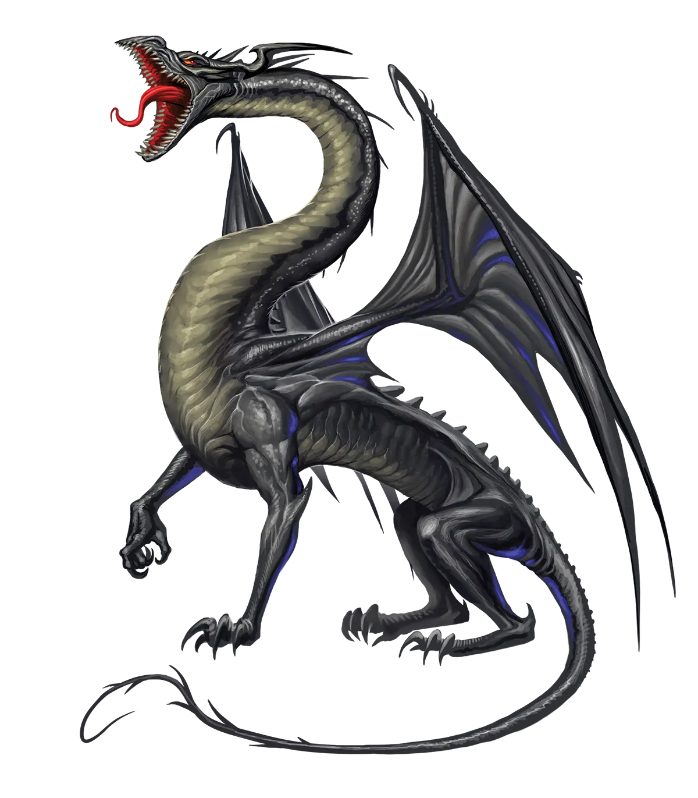
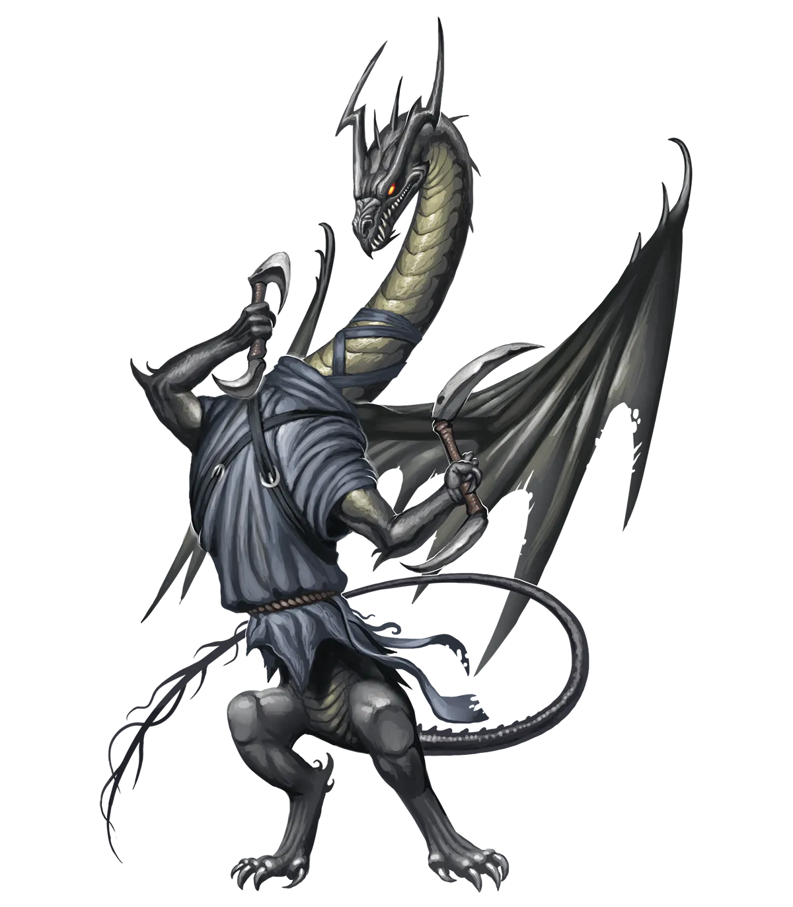

暗影洞悉
暗影龙对家庭的重视实际上让它们显得有些可爱，至少在啃食亡灵的龙类中是这样。如果它们邀请你见它们的双亲，那说明它们对你非常认真。它们喜欢将自己对祖先的亏欠比作“站在祖先的阴影之中”，不过是褒义的，更像是我们常说的“站在巨人的肩膀上”。
暗影龙 Umbral Dragon |
|
|
传统、传承和传家宝对暗影龙尤为重要，它们指引着每一条暗影龙从幼龙到太古龙的整个生命历程。这意味着，暗影龙家族在得知永光暗影龙的存在时，反应尤为剧烈。这种对传统的背离被视为对其父母传承的唾弃，因此大多数永光暗影龙都会被家族驱逐，任其自生自灭。正因如此，暗影龙通常不太可能执行永恒之光仪式，除非它们已经感到与家族传统格格不入。然而，一个恰恰相反的例外是永光暗影龙家族，它们通常会将子女纳入永恒之光仪式作为成年礼，将这一传统传承给下一代。 永光暗影龙特别乐于加入专注于与亡灵作战的冒险者队伍，因为亡灵是它们绝对最爱的零食。这样的队伍往往也非常乐意招募一条能够造成力场伤害的龙类来应对棘手的无形对手。另一方面，在亡灵稀少的地区，永光暗影龙可能会成为死灵法师，以便为自己烹制一些日后享用的美味。虽然暗影龙对冒险的危险性极为认真，但当任务进展顺利时，它们相当顽皮，倾向于把事情看得不那么严肃，更像一场游戏，即使对于队友或雇佣冒险队伍的赞助者而言有着深切的情感利害关系。这种态度有时会引发紧张，但很少有人否认，尽管暗影龙可能把任务当作游戏，但它们绝对会为胜利而战。暗影龙会训练队伍的其他成员避免战术失误，比如冲上去与近战对手胡乱挥砍直到一方倒下。相反，它们建议队伍采用暗影伏击、策略、误导、代理人和傀儡等手段。利用敌人的弱点，引敌来攻，并按照你的节奏作战。迷惑敌人，使其无法认清所面对的局势，他们便会犯错。这意味着它们常常与永光黑龙相处得极为融洽，后者的战术思维如出一辙。永光暗影龙在选择冒险伙伴时并不特别挑剔，尽管亡灵冒险者可能会因为暗影龙盟友有时凝视他们的方式而感到不安，仿佛它们闻起来格外美味。 永光暗影龙偏好隐秘而迅捷的职业，以便设置陷阱和进行伏击，例如游荡者、游侠和武僧。 暗影洞悉 暗影龙对家庭的重视实际上让它们显得有些可爱，至少在啃食亡灵的龙类中是这样。如果它们邀请你见它们的双亲，那说明它们对你非常认真。它们喜欢将自己对祖先的亏欠比作“站在祖先的阴影之中”，不过是褒义的，更像是我们常说的“站在巨人的肩膀上”。 暗影龙特质 Umbral Dragon Traits 你出身于一脉在堕影冥界猎杀不死生物的暗影龙世系。 |
  |